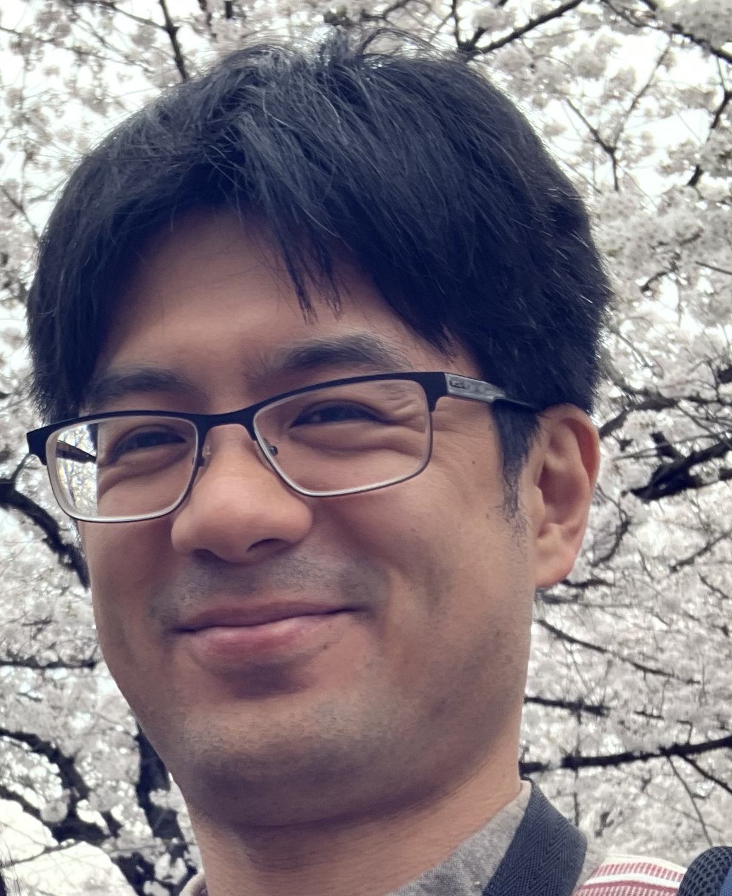

小川 洋平 (Yohei Ogawa)
研究テーマ
- トランスポゾンなどのリピート配列の同定とその種間比較
- シングルセルATAC-seqデータを用いた視細胞タイプの種間比較解析(Joseph Corbo博士との共同研究)
Research Themes
- Interspecies comparison of interspersed repeats and simple repeats (in collaboration with Dr. Shigehiro Kuraku)
- Comparative analysis of photoreceptor cell types using single-cell ATAC-seq data (in collaboration with Dr. Joseph Corbo)
Previous Research
業績（抜粋）
- Y. Ogawa, Y. Liu, C. A. Myers, A. Morshedian, G. L. Fain, A. P. Sampath, J. C. Corbo, Conservation of cis-regulatory codes over half a billion years of evolution. Sci. Adv. 11, eadw7681 (2025).
- Y. Liu, E. C. Hurley, Y. Ogawa, M. Gause, M. B. Toomey, C. A. Myers, J. C. Corbo, Avian photoreceptor homologies and the origin of double cones. Curr. Biol. 35, 2215-2227.e6 (2025).
- R. Arbore, S. Barbosa, J. Brejcha, Y. Ogawa, Y. Liu, M. P. J. Nicolaï, P. Pereira, S. J. Sabatino, A. Cloutier, E. S. K. Poon, C. I. Marques, P. Andrade, G. Debruyn, S. Afonso, R. Afonso, S. G. Roy, U. Abdu, R. J. Lopes, P. Mojzeš, P. Marík, S. Y. W. Sin, M. A. White, P. M. Araújo, J. C. Corbo, M. Carneiro, A molecular mechanism for bright color variation in parrots. Science 386, eadp7710 (2024).
- L. I. Volkov,Y. Ogawa, R. Somjee, H. E. Vedder, H. E. Powell, D. Poria, S. Meiselman, V. J. Kefalov, J. C. Corbo, Samd7 represses short-wavelength cone genes to preserve long-wavelength cone and rod photoreceptor identity. Proc. Natl. Acad. Sci. U.S.A. 121, e2402121121 (2024).
- Y. Ogawa, Photoreceptor differentiation mechanisms underlying cell-type homology among vertebrates. 比較生理生化学 40, 128–136 (2023). in Japanese. English translated version is available upon request.
- Y. Ogawa, T. Shiraki, Y. Fukada, and D. Kojima, Foxq2 determines blue cone identity in zebrafish. Science Advances 7, 1–16 (2021).
- Y. Ogawa and J. C. Corbo, Partitioning of gene expression among zebrafish photoreceptor subtypes. Scientific Reports 11, 17340 (2021).
- Y. Ogawa, T. Shiraki, Y. Asano, A. Muto, K. Kawakami, Y. Suzuki, D. Kojima, and Y. Fukada, Six6 and Six7 coordinately regulate expression of middle-wavelength opsins in zebrafish. Proc. Natl. Acad. Sci. U.S.A. 116, 4651–4660 (2019).
- Y. Ogawa, T. Shiraki, D. Kojima, and Y. Fukada, Homeobox transcription factor Six7 governs expression of green opsin genes in zebrafish. Proc. R. Soc. B: Biol. 282, 20150659 (2015).
Selected Publications
- Y. Ogawa, Y. Liu, C. A. Myers, A. Morshedian, G. L. Fain, A. P. Sampath, J. C. Corbo, Conservation of cis-regulatory codes over half a billion years of evolution. Sci. Adv. 11, eadw7681 (2025).
- Y. Liu, E. C. Hurley, Y. Ogawa, M. Gause, M. B. Toomey, C. A. Myers, J. C. Corbo, Avian photoreceptor homologies and the origin of double cones. Curr. Biol. 35, 2215-2227.e6 (2025).
- R. Arbore, S. Barbosa, J. Brejcha, Y. Ogawa, Y. Liu, M. P. J. Nicolaï, P. Pereira, S. J. Sabatino, A. Cloutier, E. S. K. Poon, C. I. Marques, P. Andrade, G. Debruyn, S. Afonso, R. Afonso, S. G. Roy, U. Abdu, R. J. Lopes, P. Mojzeš, P. Marík, S. Y. W. Sin, M. A. White, P. M. Araújo, J. C. Corbo, M. Carneiro, A molecular mechanism for bright color variation in parrots. Science 386, eadp7710 (2024).
- L. I. Volkov,Y. Ogawa, R. Somjee, H. E. Vedder, H. E. Powell, D. Poria, S. Meiselman, V. J. Kefalov, J. C. Corbo, Samd7 represses short-wavelength cone genes to preserve long-wavelength cone and rod photoreceptor identity. Proc. Natl. Acad. Sci. U.S.A. 121, e2402121121 (2024).
- Y. Ogawa, T. Shiraki, Y. Fukada, and D. Kojima, Foxq2 determines blue cone identity in zebrafish. Science Advances 7, 1–16 (2021).
- Y. Ogawa and J. C. Corbo, Partitioning of gene expression among zebrafish photoreceptor subtypes. Scientific Reports 11, 17340 (2021).
- Y. Ogawa, T. Shiraki, Y. Asano, A. Muto, K. Kawakami, Y. Suzuki, D. Kojima, and Y. Fukada, Six6 and Six7 coordinately regulate expression of middle-wavelength opsins in zebrafish. Proc. Natl. Acad. Sci. U.S.A. 116, 4651–4660 (2019).
- Y. Ogawa, T. Shiraki, D. Kojima, and Y. Fukada, Homeobox transcription factor Six7 governs expression of green opsin genes in zebrafish. Proc. R. Soc. B: Biol. 282, 20150659 (2015).
経歴・職歴
- 2025年11月 - 現在 国立遺伝学研究所, 分子生命史研究室, 特任助教
- 2025年5月 - 2025年10月 国立遺伝学研究所, 分子生命史研究室, 特任研究員
- 2023年9月 - 2025年4月 Washington University School of Medicine, Pathology and Immunology, Staff Scientist
- 2018年9月 - 2023年8月 Washington University School of Medicine, Pathology and Immunology, Postdoctoral Research Associate
- 2020年4月 - 2022年9月 独立行政法人日本学術振興会, 海外特別研究員
- 2018年4月 - 2018年8月 東京大学, 大学院理学系研究科, 特任研究員
- 2016年4月 - 2018年3月 独立行政法人日本学術振興会, 特別研究員
- 2014年4月 - 2017年3月東京大学, 大学院理学系研究科大学院博士課程, 生物科学専攻
- 2012年4月 - 2014年3月東京大学, 大学院理学系研究科, 生物化学専攻
- 2010年4月 - 2012年3月東京大学, 理学部, 生物化学科
Career
-
2025 Nov-Present, Project Assistant Professor
National Institue of Genetics, Molecular Life History Laboratory, Mishima, Japan -
2025 May-Oct, Project Researcher
National Institue of Genetics, Molecular Life History Laboratory, Mishima, Japan -
2023 Sept-2025 Apr, Staff Scientist
Washington University School of Medicine, Department of Pathology and Immunology, St. Louis, USA -
2018 Sept-2023 Aug, Postdoctoral Research Associate
Washington University School of Medicine, Department of Pathology and Immunology, St. Louis, USA -
2018 Apr-Aug, Postdoctoral Fellow
University of Tokyo, Department of Biological Sciences, Tokyo, JAPAN -
2017 Apr-2018 Mar, Research Fellow (Postdoctoral) of Japan Society for the Promotion of Science
University of Tokyo, Department of Biological Sciences, Tokyo, JAPAN -
2012-2017, Graduate student
The University of Tokyo, Graduate School of Science, Department of Biological Sciences, Tokyo, JAPAN -
2008-2012, Undergraduate student
The University of Tokyo, Faculty of Science, Department of Biophysics and Biochemistry, Tokyo, JAPAN
連絡先
お問い合わせは以下の方法でお願いします：
- X: @YoheyOgawa
- BlueSky: bsky.app/profile/yohey-ogawa.bsky.social
- Email: yohei.ogawa(アットマーク)nig.ac.jp